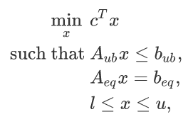
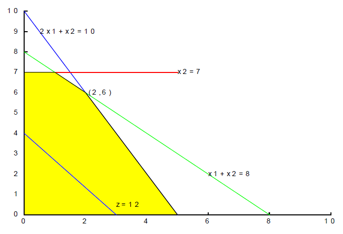

SciPy包介绍#
SciPy（Scientific Python）是一个用于数学、科学和工程应用的开源Python库。它在NumPy库的基础上构建，并提供了大量的用于优化、积分、插值、特殊函数、信号和图像处理等任务的模块和函数。
为什么使用SciPy：
SciPy提供了比NumPy更多的科学计算功能和算法。
适用于统计学、信号处理、图像分析、线性代数等多个领域。
插值与拟合#
插值：求过已知有限个数据点的近似函数。
拟合：已知有限个数据点，求近似函数，不要求过已知数据点，只要求在某种意义下它在这些点上的总偏差最小。
插值和拟合都是要根据一组数据构造一个函数作为近似，由于近似的要求不同，二者的数学方法上是完全不同的。而面对一个实际问题，究竟应该用插值还是拟合，有时容易确定，有时则并不明显。
常用插值方法#
插值方法 |
优点 |
缺点 |
对应函数 |
|---|---|---|---|
拉格朗日多项式插值 |
理解和实现都相对简单 |
随着数据点数量的增加，计算复杂度快速上升。 |
|
分段线性插值 |
计算简单，速度快 |
不能很好地逼近复杂的函数形状 |
|
Hermite插值 |
除了函数值外，还可以考虑导数，因此通常更精确 |
需要更多的数据信息（例如：导数） |
|
三次样条插值 |
可以提供较为平滑和精确的逼近 |
对于不平滑或者具有突变的函数，可能不太适用 |
|
import numpy as np
from scipy.interpolate import CubicSpline, interp1d, lagrange, CubicHermiteSpline
import matplotlib.pyplot as plt
# 生成数据
X = np.linspace(0, 2*np.pi, 5)
Y = np.sin(X)
dY = np.cos(X)
# 插值方法
f_linear = interp1d(X, Y, kind='linear')
f_lagrange = lagrange(X, Y)
f_hermite = CubicHermiteSpline(X, Y, dY)
f_cubicSpline = CubicSpline(X, Y)
# 绘图
fig, ax = plt.subplots()
x_new = np.linspace(0, 2*np.pi, 300) # 用于插值函数的新数据点
ax.plot(X, Y, 'o', label='data')
ax.plot(x_new, f_linear(x_new), label='linear')
ax.plot(x_new, f_lagrange(x_new), label='lagrange')
ax.plot(x_new, f_hermite(x_new), label='hermite')
ax.plot(x_new, f_cubicSpline(x_new), label='cubicSpline')
ax.legend()
plt.show()
import numpy as np
import matplotlib.pyplot as plt
from scipy.interpolate import lagrange
def example_function(x):
return 1 / (1 + 25 * x ** 2)
x = np.linspace(-1, 1, 11)
y = example_function(x)
# 进行拉格朗日插值
polynomial = lagrange(x, y)
# 生成用于绘图的点
x_plot = np.linspace(-1, 1, 400)
y_plot = example_function(x_plot)
y_lagrange = polynomial(x_plot)
# 绘图
fig, ax = plt.subplots(figsize=(10, 6))
ax.plot(x_plot, y_plot, label='True', linewidth=2)
ax.plot(x_plot, y_lagrange, label='Lagrange Interpolation', linestyle='--')
ax.scatter(x, y, color='red', label='Data Points')
ax.legend()
plt.show()
import numpy as np
from scipy.interpolate import CubicSpline, CubicHermiteSpline
import matplotlib.pyplot as plt
X = np.linspace(0, 4*np.pi, 9)
Y = np.sin(X)
dY = np.cos(X)
f_hermite = CubicHermiteSpline(X, Y, dY)
f_cubicSpline = CubicSpline(X, Y)
# 绘图
fig, ax = plt.subplots(1,3,figsize=(20, 6))
x_new = np.linspace(0, 4*np.pi, 300) # 用于插值函数的新数据点
ax[0].plot(X, Y, 'o', label='data')
ax[0].plot(x_new, np.sin(x_new), '--', label='true')
ax[0].plot(x_new, f_hermite(x_new), label='hermite')
ax[0].plot(x_new, f_cubicSpline(x_new), label='cubicSpline')
ax[0].legend()
ax[0].set_title('f(x)')
ax[1].plot(X, dY, 'o', label='data')
ax[1].plot(x_new, np.cos(x_new), '--', label='true')
ax[1].plot(x_new, f_hermite(x_new,1), label='hermite')
ax[1].plot(x_new, f_cubicSpline(x_new,1), label='cubicSpline')
ax[1].legend()
ax[1].set_title('f\'(x)')
ax[2].plot(X, -Y, 'o', label='data')
ax[2].plot(x_new, -np.sin(x_new), '--', label='true')
ax[2].plot(x_new, f_hermite(x_new,2), label='hermite')
ax[2].plot(x_new, f_cubicSpline(x_new,2), label='cubicSpline')
ax[2].legend()
ax[2].set_title('f\'\'(x)')
plt.show()
拟合#
SciPy在scipy.optimize子包中提供了curve_fit，用于函数拟合。其使用非线性最小二乘法拟合函数。
注意： 对于最小二乘法来说，如果遇到非凸优化问题，也就是局部极小值不是全局最小值的时候，可能需要用户手动调整初始参数，来达到一个较好的结果。
import numpy as np
import matplotlib.pyplot as plt
from scipy.optimize import curve_fit
# 定义函数
def example_function(x):
return 1 * x**2 + (-2) * x + 1
def quadratic_function(x, a, b, c):
return a * x**2 + b * x + c
def linear_function(x, a, b):
return a * x + b
# 实验数据
np.random.seed(0)
X = np.linspace(-10, 10, 10)
Y = example_function(X) + np.random.normal(0, 10, 10)
# 执行拟合
params_q, _ = curve_fit(quadratic_function, X, Y, p0=[1, 1, 1])
params_l, _ = curve_fit(linear_function, X, Y, p0=[1, 1])
fig, ax = plt.subplots()
x_new = np.linspace(-10, 10, 300)
ax.plot(X, Y, 'o', label='data')
ax.plot(x_new, example_function(x_new), '--', label='true')
ax.plot(x_new, quadratic_function(x_new, *params_q), label='quadratic') # *用于解包params_q，将其中每一个元素作为独立的参数传递给quadratic_function
ax.plot(x_new, linear_function(x_new, *params_l), label='linear')
ax.legend()
plt.show()
求解代数方程#
在SciPy中，解代数方程通常使用fsolve函数。这个函数用于寻找非线性方程f(x)=0的根。
注意：fsolve是一个迭代算法，需要一个初始猜测值来开始寻找根。根据这个初始值，算法可能会收敛到不同的解。因此，在使用fsolve时，选择合适的初始猜测值是很重要的。
我们接下来进行一个演示，假设我们需要求解方程
首先，我们需要将其化为一下形式
我们注意到，这个二次方程是有2个解的，\(x=2\)和\(x=3\)，我们将展示，初始猜测值的影响。
from scipy.optimize import fsolve
def equation(x):
return x**2 - 5*x + 6
# 选择一个初始猜测值
initial_guess = 1.5
root = fsolve(equation, initial_guess)
print("初始猜测为1.5时，方程的根为：", root)
# 选择一个初始猜测值
initial_guess = 3.5
root = fsolve(equation, initial_guess)
print("初始猜测为3.5时，方程的根为：", root)
初始猜测为1.5时，方程的根为： [2.]
初始猜测为3.5时，方程的根为： [3.]
我们展示一个稍微复杂一点的例子，求解下述方程组
我们还是需要先将其变为
import numpy as np
from scipy.optimize import fsolve
def equation(x):
return [x[0] * np.cos(x[1]) - 4,
x[1] * x[0] - x[1] - 5]
root = fsolve(equation, [1, 1])
print("方程组的根为：", root)
方程组的根为： [6.50409711 0.90841421]
求解常微分方程#
SciPy库中scipy.integrate子库的solve_ivp函数（Initial-Value Problem Solver，初值问题求解器）常用于解常微分方程。该函数提供了多种数值方法，如龙格库塔方法、BDF方法等，用于解决初值问题。
一些较老的文章，可能使用
scipy.integrate.odeint对常微分方程进行求解，但是现在不太推荐
我们先从一个简单的问题入手，我们希望求解方程
当然我们知道，这个方程的解是\(x = e^{4t}\)
import numpy as np
from scipy.integrate import solve_ivp
from matplotlib import pyplot as plt
def pendulum_equations(t, y):
dydt = [4*y[0]]
return dydt
initial_conditions = [1] #初始条件
t_span = [0,2] #时间区间
t_eval = np.linspace(0,2,100) #返回解用的时间点
solution = solve_ivp(pendulum_equations, t_span, initial_conditions, t_eval=t_eval)
fig, ax = plt.subplots()
ax.plot(solution.t, solution.y[0], label='solution')
ax.plot(solution.t, np.exp(4*solution.t), label='true')
ax.legend()
plt.show()
print(type(solution))
print(solution)
print(solution.t - t_eval)
<class 'scipy.integrate._ivp.ivp.OdeResult'>
message: The solver successfully reached the end of the integration interval.
success: True
status: 0
t: [ 0.000e+00 2.020e-02 ... 1.980e+00 2.000e+00]
y: [[ 1.000e+00 1.084e+00 ... 2.748e+03 2.980e+03]]
sol: None
t_events: None
y_events: None
nfev: 44
njev: 0
nlu: 0
[0. 0. 0. 0. 0. 0. 0. 0. 0. 0. 0. 0. 0. 0. 0. 0. 0. 0. 0. 0. 0. 0. 0. 0.
0. 0. 0. 0. 0. 0. 0. 0. 0. 0. 0. 0. 0. 0. 0. 0. 0. 0. 0. 0. 0. 0. 0. 0.
0. 0. 0. 0. 0. 0. 0. 0. 0. 0. 0. 0. 0. 0. 0. 0. 0. 0. 0. 0. 0. 0. 0. 0.
0. 0. 0. 0. 0. 0. 0. 0. 0. 0. 0. 0. 0. 0. 0. 0. 0. 0. 0. 0. 0. 0. 0. 0.
0. 0. 0. 0.]
我们观察一个稍微复杂一点的例子：
我们观察一下，下面这个方程
我们展示一个稍微复杂一点的例子，求解下述方程组
我们用\(y_0\)，\(y_1\)表示\(x\)，\(\frac{dx}{dt}\)，我们可以整理得到
我们考虑\(m=1,c=0.5,k=4\)的特殊情况
我们知道，这个方程的解应该是
import numpy as np
from scipy.integrate import solve_ivp
from matplotlib import pyplot as plt
def pendulum_equations(t, y):
dydt = [y[1],-0.5*y[1]-4*y[0]]
return dydt
initial_conditions = [5,0] #初始条件
t_span = [0,10] #时间区间
t_eval = np.linspace(0,10,100) #返回解用的时间点
solution = solve_ivp(pendulum_equations, t_span, initial_conditions, t_eval=t_eval)
# 定义常数和方程参数
zeta = 0.125
omega_n = 2
x0 = 5
v0 = 0
omega_d = omega_n * np.sqrt(1 - zeta**2)
x_t = np.exp(-2 * zeta * t_eval) * (x0 * np.cos(omega_d * t_eval) + (v0 + zeta * omega_n * x0) / omega_d * np.sin(omega_d * t_eval))
fig, ax = plt.subplots()
ax.plot(solution.t, solution.y[0], label='solution')
ax.plot(t_eval, x_t, label='true')
ax.legend()
plt.show()
数值积分#
使用scipy.integrate子包中提供了quad用于一维数值积分。quad函数接受被积函数、积分下限和积分上限作为输入，返回积分结果和估计的误差。
下面我们将展示如何求\(sin(x)\)在\([0,\pi]\)上的数值积分，我们知道，结果应该是2
from scipy.integrate import quad
import numpy as np
# 定义被积函数
def integrand(x):
return np.sin(x)
# 进行数值积分
result, error = quad(integrand, 0, np.pi)
# 输出结果
print(f"积分结果：{result}, 估计误差：{error}")
积分结果：2.0, 估计误差：2.220446049250313e-14
线性优化#
SciPy库包含一个用于优化问题的模块：scipy.optimize。该模块提供了多种工具，用于求解无约束或带约束的优化问题，其中包括线性优化。我们今天仅仅以线性优化为例。scipy.optimize.linprog是用于解决线性规划问题的函数。这个函数接受目标函数的系数、约束条件的系数矩阵和边界值，并返回最优解和优化状态。
使用scipy.optimize.linprog函数时，线性规划问题需要被表述成下述形式：

我们观察下面这个线性优化问题
观察下面的图像，我们容易知道，上述问题的最优解为[2,6]，最优值为26

from scipy.optimize import linprog
# 定义目标函数系数，这是希望被最小化的函数，如果你需要求最大化，取反即可
c = [-4, -3]
# 定义约束条件矩阵和常数（注意：这里是小于等于形式）
A = [[2, 1], [1, 1]]
b = [10, 8]
# 定义变量边界
x0_bounds = (0, None)
x1_bounds = (0, 7)
# 进行线性优化
res = linprog(c, A_ub=A, b_ub=b, bounds=[x0_bounds, x1_bounds])
# 输出结果
print(f"最优解：{res.x}, 最优值：{res.fun}")
最优解：[2. 6.], 最优值：-26.0